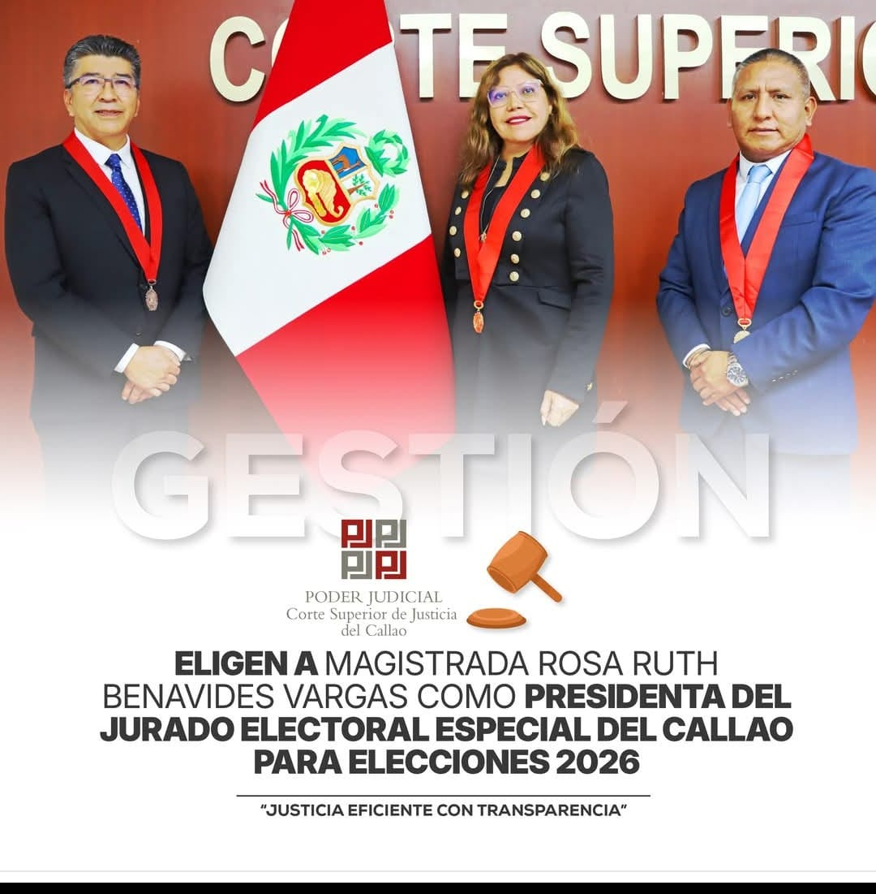

Pese a tener investigaciones fiscales en curso, la ex fiscal de la Nación, Liz Patricia Benavides, de 56 años, se alista para retornar como fiscal suprema al ministerio público o como miembro del JNE, en representación de la Fiscalía. Está a la espera, dice su abogado, Jorge del Castillo, del día y la hora que le indiquen para reinstalarse ya no como Fiscal de la Nación, pero sí como fiscal suprema, decidida a todo. Enma Rosaura, de 62 años, ya despacha como jueza superior desde hace casi un mes y es la presidenta de la Décima Sala Penal Liquidadora del Poder Judicial, una instancia decisiva y que ve casos de corrupción, narcotráfico y crimen organizado. Y una tercera Benavides Vargas, Rosa Ruth, de 58 años, es también jueza superior en el Callao y es la flamante presidenta del Jurado Electoral Especial (JEE) del Callao, la cuna misma de los hermanitos “Cuellos Blancos”.
Así las cosas, las tres hermanas ya activadas, están en sus marcas y en posiciones estratégicas justo ahora que empieza la cuenta regresiva para las próximas elecciones presidenciales de 2026.
 Las tres hermanas tienen investigaciones fiscales en curso
Las tres hermanas tienen investigaciones fiscales en curso
Patricia Benavides es investigada en el Ministerio Público por interferir en casos claves en la lucha anticorrupción, por ejemplo, en el de “Los Cuellos Blancos del Puerto”. También por haberse inmiscuido para favorecer a su hermana Enma Rosaura, en el expediente fiscal en su contra por presuntamente haber recibido coimas para liberar a numerosos narcotraficantes de alto vuelto. Precisamente, gracias a la intervención prodigiosa de su hermana fiscal de la Nación, fue que Enma Rosaura logró que la investigación que la perseguía fuese sobreseída y archivada por el fiscal Helder Dianderas, un fiscal “ad-hoc” traído desde Arequipa. Este fiscal fue colocado adrede por Patricia Benavides para cumplir con tal propósito, en reemplazo de la fiscal Bersabeth Revilla, a quien la entonces fiscal de la Nación apartó de manera abusiva argumentando una falaz falta de productividad. Revilla tenía contra las cuerdas a la mayor de las hermanas Benavides Vargas y se prestaba a tomar declaración a rankeados narcotraficantes, a quienes presuntamente Enma Benavides había liberado a cambio de jugosas coimas, pero fue retirada del caso.
 Patricia y Enma Benavides Vargas
Patricia y Enma Benavides Vargas
Luego de que el Poder Judicial revocara la suspensión de Patricia Benavides, su retorno al Ministerio Público es inminente. Al cierre de este informe, Liz Patricia todavía no había hecho posesión de cargo en alguna Fiscalía Suprema, está en compás de espera. Y mientras la Junta Nacional de Justicia (JNJ) y la defensa de Benavides, sincronizadamente y desde el mismo bando, azuzaban a la Fiscal de la Nación, Delia Espinoza para que reponga a Patricia Benavides como fiscal suprema, la máxima autoridad en el ministerio público, resiste y batalla prácticamente sola para adecentar el Ministerio Público e impedir a toda costa que Patricia Benavides retorne como fiscal suprema.
Y de alguna manera, Delia Espinoza se toma la revancha y le está dando a Patricia Benavides de su propia medicina: “Vamos a ver si hay presupuesto para sustentar un eventual retorno de la señora Benavides”, dijo en conferencia de prensa, la fiscal de la Nación, recordando quizás el eco de las mismas palabras que le endilgó Patricia Benavides hace dos años atrás, cuando argumentó falta de recursos y no le permitió ocupar su lugar en una fiscalía suprema ni en la Junta de Fiscales Supremos. Y la envió en aquel entonces como representante del ministerio público ante el JNE. El mundo es un pañuelo y da vueltas y se cambiaron las posiciones en el mostrador. Ahora Benavides es la que reclama su plaza ante Espinoza.
 Fiscal de la Nación Delia Espinoza: ahora le da de su propia medicina a Patricia Benavides
Fiscal de la Nación Delia Espinoza: ahora le da de su propia medicina a Patricia Benavides
“Estamos a la espera de que el área de presupuesto nos informe de manera certera si es que tenemos el presupuesto para atender el eventual retorno de la señora Benavides”, dijo Espinoza.
No hay muchas opciones para Benavides, casi todas las fiscalías supremas ya están comandadas. La primera Fiscalía Suprema en lo penal está ocupada por Pablo Sánchez, la segunda Fiscalía Suprema en lo penal está a cargo de Zoraida Avalos, la Fiscalía Suprema especializada en delitos cometidos por funcionarios públicos está a cargo de Juan Carlos Villena y la Fiscalía Suprema de Familia es despachada por Tomás Gálvez.
Así las cosas, la Fiscal de la Nación ha deslizado que Benavides podría hacerse cargo o de la Primera o de la Segunda Fiscalía Suprema Especializada en delitos cometidos por funcionarios públicos, que vienen siendo ocupadas por fiscales supremos provisionales, Rosa López y Alcides Chinchay respectivamente.
 Fiscal Alcides Chinchay, vocal supremo provisional que investiga a Enma Benavides. Patricia Benavides no podría ocupar esa plaza por conflicto de interés.
Fiscal Alcides Chinchay, vocal supremo provisional que investiga a Enma Benavides. Patricia Benavides no podría ocupar esa plaza por conflicto de interés.
Sin embargo, en estas dos fiscalías supremas, Patricia Benavides tendría serios conflictos de interés. En la fiscalía a cargo de Rosa López, se investiga a los altos funcionarios implicados en el caso Los Cuellos Blancos del puerto y Benavides es una de las investigadas ahí.
En la fiscalía suprema que despacha Alcides Chinchay se encuentra la investigación contra la hermana de Patricia Benavides, Enma Benavodes por presuntos sobornos de procesados y líderes de banda de narcotráfico.
La tercera opción y la más probable es que Patricia Benavides vaya a parar al Jurado Nacional de Elecciones, como representante del Ministerio Público. Ad portas de las elecciones presidenciales del 2026, no sería un premio consuelo, sino un premio mayor para determinados fines políticos. Actualmente esa plaza la ocupa una fiscal suprema provisional, Martha Maisch.
Por si fuera poco, Patricia Benavides también es acusada de haber interferido en la investigación de su otra hermana, Rosa Ruth, quien desde el año 2007 es jueza en el Callao y entre 2019 y 2020 fue presidenta de la Corte Superior de Justicia del Callao.
 Patricia Benavides podría terminar como miembro del JNE, con los riesgos que eso implica.
Patricia Benavides podría terminar como miembro del JNE, con los riesgos que eso implica.
Por si fuera poco, Patricia Benavides también es acusada de haber interferido en la investigación de su otra hermana, Rosa Ruth, quien desde el año 2007 es jueza en el Callao y entre 2019 y 2020 fue presidenta de la Corte Superior de Justicia del Callao.
 La tercera hermana, Rosa Ruth, flamante presidenta del JEE del Callao, tiene un audio con uno de los cabecillas de Cuello Blanco Walter Ríos.
La tercera hermana, Rosa Ruth, flamante presidenta del JEE del Callao, tiene un audio con uno de los cabecillas de Cuello Blanco Walter Ríos.
Esta tercera hermana, Rosa Ruth, tampoco se queda atrás y cuenta con un interesante historial de perlas negras. En setiembre de 2022 fue denunciada por la presunta contratación irregular de 242 trabajadores en la Corte Superior de Justicia del Callao -sin concurso- a cambio de cupos de medio sueldo y un sueldo, cuando se desempeñaba como presidenta de dicha corte superior (carpeta fiscal N 68-2021)
Rosa Ruth Benavides también ha sido protagonista de un audio en el que se le escucha pedir un favor a Walter Ríos, líder de los cuellos blancos, cuando este era presidente de la Corte Superior de Justicia del Callao, en el año 2018. La grabación fue hecha en el marco de la investigación matriz por el caso Cuellos Blancos.
La llamada se realizó el 1 de junio de 2018. Por entonces ella era presidenta de la Segunda Sala Penal Liquidadora del Callao. Y se le escucha “pedir un gran servicio” a Ríos, el cambio de la jueza Rocío Vásquez Barrantes que había sido designada en la Segunda Sala Penal Liquidadora del Callao, donde ella era presidenta. Argumentó una supuesta “falta de productividad”. “No me pongas a ella, es terrible, muy lenta, se le escucha decir”. Ríos la llamaba a ella “hermanita”. Y Rosa Ruth le decía “hermanito lindo”. Toda una hermandad a flor de piel.
 Rosa Ruth Benavides bien posicionada en el JEE del Callao. Deberá resolver en primera instancia las apelaciones y reclamos relacionados con el proceso electoral del 2026.En mayo pasado, Rosa Ruth fue elegida presidenta del Jurado Electoral Especial (JEE) del Callao para las elecciones en el 2026. Ella estará a cargo en el Callao de las elecciones de presidente y vicepresidentes de la República, senadores, diputados y representantes del Parlamento Andino y asumirá el rol de actuar como primera instancia en materia electoral.
No son pocas las tareas que tendrá a cargo Rosa Ruth: además de resolver en primera instancia las apelaciones y reclamos relacionados con el proceso electoral en su jurisdicción, deberá supervisar y controlar el cumplimiento de las normas electorales, gestionar los recursos necesarios para el proceso electoral, proclamar los resultados electorales en su ámbito territorial, resolver controversias relacionadas con las actas electorales, impugnaciones de votos y otros asuntos relacionados con el proceso electoral. También llevar a cabo actividades de capacitaciones a los miembros de mesa y al electorado. Sin duda una ardua tarea en materia electoral queda en manos de esta hermanita Benavides. A estar atentos.